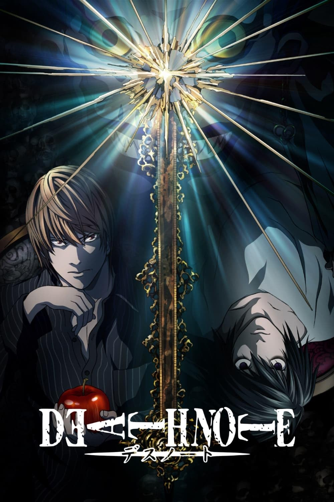

Web designing:
I like to design web pages using HTML in my free time . I am learning
HTML since 2 years . I have taken web designing as one of my favourite
hobbies . I build the structure of my page in HTML and give it a good
look using css . Sometimes i add some Javascript code and functions to
make it appear more beautiful. I have created so many webpages . I love
this hobby so much.


Learning new software languages :
My Another hobby is learning new software languages. I love coding and
learning new languages help me grow my knowledge and gives me
opportunities to create new and extraordinary applications whether its
an website or an app. I have learned HTML , CSS , Javascript , C/C++ and
as Javascript libraries i have learned React.js so far.


Watching Anime :
My favourite hobby is to watch anime in my free time or when i am
getting bored. Watching anime is a hobby enjoyed by many. It's like
watching cartoons, but from Japan. Anime comes in different types, like
action or romance. But i prefer action , drama , psychological , mystery
anime more than anything. Some of my finished animes are :
- One Punch Man
- Baki The Grappler
- Monster
- Death Note
- One Piece
- Hajime No Ippo
- Attack On Titan
